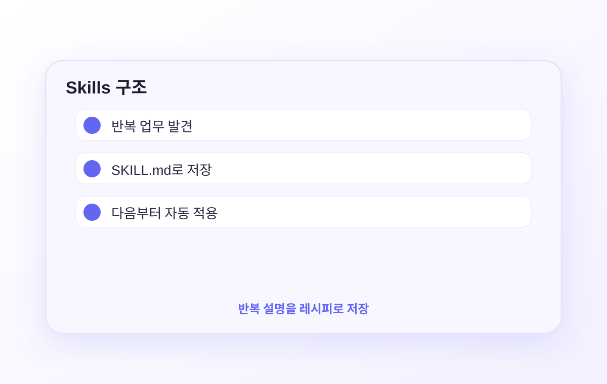

매번 "회의록을 이런 형식으로 정리해줘, 참석자 목록을 맨 위에 넣고, 액션아이템은 담당자별로…" 같은 설명을 반복하고 있나요? Skills를 사용하면 그 모든 설명을 레시피로 저장해두고 /meeting 한 마디로 꺼내 쓸 수 있습니다.
매번 똑같이 설명하는 일이 생기면 Skill 후보입니다.

Claude와 일하면서 가장 피곤한 게 이겁니다:
월요일 "주간 보고서 써줘. 형식은 먼저 이번 주 핵심 성과를 3줄로, 그 다음 진행 중인 업무 목록, 마지막에 이슈 사항이야. 어조는 간결하게." 다음 주 월요일 "주간 보고서 써줘. 형식은 먼저 이번 주 핵심 성과를 3줄로, 그 다음 진행 중인 업무 목록…"
같은 작업인데 매번 같은 설명을 반복합니다. Claude는 이전 세션을 기억하지 못하기 때문입니다.
Skills는 이 반복 설명을 한 번만 작성해두는 시스템입니다. 파일로 저장되어 있어서 Claude가 매번 꺼내 씁니다.
매번 긴 설명 타이핑. 형식이 조금씩 다르게 나옴. 지시가 길수록 토큰 소비도 큼.
/weekly-report 한 줄. 항상 동일한 형식. 팀원과도 같은 결과물을 공유 가능.
주간 보고, 회의록, 업무 일지 등 형식이 고정된 반복 문서
SNS 게시물, 뉴스레터, 블로그 포스트 등 브랜드 톤이 필요한 작업
파일을 특정 형식으로 번역하거나 변환하는 작업
Skills는 Claude Code에 새 능력을 추가하는 재사용 가능한 워크플로우입니다. SKILL.md라는 파일을 만들면 Claude가 그것을 도구로 인식하고 /스킬이름으로 실행할 수 있습니다.
요리 레시피와 똑같습니다:
요리 레시피
재료 목록, 순서, 조리법을 한 번 기록해두면 매번 "어떻게 만들지?" 고민 없이 그대로 따라할 수 있습니다.
SKILL.md
작업 절차, 형식, 규칙을 한 번 기록해두면 Claude가 매번 그대로 실행합니다. /weekly-report 한 번으로.
| 항목 | 일반 대화 | Skills |
|---|---|---|
| 실행 방법 | 매번 긴 설명 타이핑 | /skill-name 한 번 |
| 일관성 | 매번 조금씩 다를 수 있음 | 항상 동일한 절차 |
| 팀 공유 | 불가 | Git으로 팀 전체 공유 가능 |
| 인자 전달 | 설명 안에 섞어서 | /translate ko README.md처럼 명확하게 |
Skills는 폴더 하나와 그 안의 SKILL.md 파일로 구성됩니다:
SKILL.md는 두 부분으로 나뉩니다:
---로 감싼 설정 영역. 스킬 이름, 설명, 실행 방식을 정의합니다.
Claude에게 줄 지시사항. "이렇게 저렇게 해줘"를 적는 곳입니다. 자연어로 쓰면 됩니다.
weekly-report 스킬을 실행합니다.
비개발자는 파일을 직접 만들려고 하지 않아도 됩니다. Claude Code의 skill-creator에게 “이 반복 작업을 스킬로 만들어줘”라고 시키는 방식이 가장 쉽습니다.
아래 문장을 Claude Code에 그대로 붙여넣으면 됩니다. 폴더 구조나 frontmatter를 먼저 외울 필요 없습니다.
아래 예시는 직접 따라 하는 단계가 아니라, Claude가 skill-creator로 만들어주는 결과를 이해하기 위한 참고입니다.
skill-creator가 보통 이 폴더를 만들어줍니다. 직접 해야 할 때만 아래 명령어를 쓰세요:
Claude가 만들어주는 파일은 대략 아래처럼 생깁니다. 처음에는 “이런 파일이 생기는구나” 정도만 보면 됩니다:
생성된 뒤에는 Claude Code에서 이렇게 바로 사용하세요:
/meeting만 입력하면 됩니다.
스킬 이름을 몰라도 됩니다. description이 잘 쓰여 있으면 Claude가 자동으로 맞는 스킬을 씁니다:
Claude에게 바로 만들어달라고 해도 됩니다:
/skill-creator를 입력하면 됩니다. 별도 설치가 필요할 수 있습니다.
비개발자 직장인이 자주 쓰는 스킬 예시입니다. 복사해서 그대로 사용하거나 내 업무에 맞게 수정하세요.
만들 위치: ~/.claude/skills/weekly-report/SKILL.md
사용법:
만들 위치: ~/.claude/skills/sns-post/SKILL.md
사용법:
만들 위치: ~/.claude/skills/translate/SKILL.md
사용법:
만들 위치: ~/.claude/skills/email-draft/SKILL.md
사용법:
Skills를 사용하면서 마주치는 질문들입니다.
체크할 것:
1. 폴더 구조: ~/.claude/skills/스킬이름/SKILL.md 경로가 정확한지 확인하세요. SKILL.md는 대문자입니다.
2. Frontmatter: ---로 시작하고 끝나는 부분이 있는지, name과 description이 있는지 확인하세요.
3. Claude Code 재시작: 새로 만든 스킬은 Claude Code를 재시작해야 인식됩니다.
SKILL.md 파일을 직접 열어서 수정하면 됩니다. 텍스트 파일이라 메모장, VS Code 어디서든 편집 가능합니다.
또는 Claude에게 "meeting 스킬의 출력 형식을 수정해줘. 액션아이템에 우선순위 열도 추가해줘"라고 말하면 Claude가 파일을 직접 수정해줍니다.
이전에 .claude/commands/ 폴더에 만들던 커스텀 슬래시 커맨드가 Skills로 통합되었습니다. 기존 방식으로 만든 파일은 그대로 동작합니다.
새로 만들 때는 Skills 방식(.claude/skills/)을 권장합니다. SKILL.md에는 frontmatter로 더 세밀한 설정이 가능하고, Claude가 상황에 맞게 자동으로 선택해 실행할 수 있습니다.
맞습니다. 스킬이 많아지면 어떤 게 있는지 헷갈릴 수 있습니다.
관리 팁: /를 입력하면 전체 목록이 나옵니다. 스킬 description이 명확해야 목록에서 바로 알아볼 수 있습니다. 자주 안 쓰는 스킬은 폴더를 _archive/로 이동하거나 삭제해도 됩니다.
공유하고 싶은 스킬을 ~/.claude/skills/ 대신 프로젝트 폴더 안의 .claude/skills/에 만드세요.
그러면 이 폴더를 Git으로 공유할 때 스킬도 함께 공유됩니다. 팀원이 같은 프로젝트를 열면 동일한 스킬을 쓸 수 있습니다.
Skills 마스터
반복 작업이 /명령어 하나로 바뀌었습니다